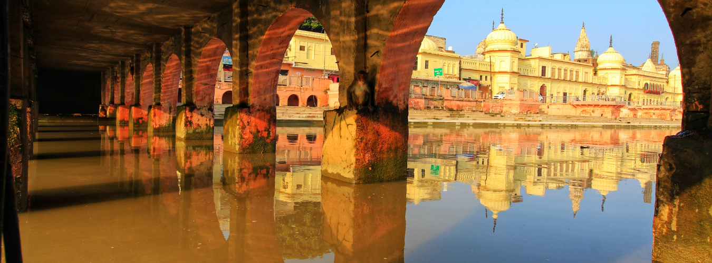

Skip to content
Home
Festivals
Holi
Diwali
Holi Festival
Indian Festival
Maha Shivratri
Maha Shivratri
Tourism
Agra Tourism
Ahmedabad Tourism
Ajmer Tourism
Allahabad Tourism
Amritsar Tourism
Delhi Tourism
Dharamshala Tourism
Goa Tourism
Indian Tourism
Jaipur tourism
Lucknow Tourism
Nepal Tourism
Kolkata tourism
Patna Tourism
Porbandar Tourism
Rajkot Tourism
Shillong tourism
Shimla tourism
Bangalore Tourism
Mumbai Tourism
Blog
Bharat Taxi Blog
Bangalore to Pondicherry Road Trip
Pooja Dubey
June 19, 2024
Top 10 Tourist Places in South India
Raj Kishor Kannoujea
May 19, 2024
Local Tourist Places to Visit in Pune
Raj Kishor Kannoujea
February 19, 2024
Local Places to Visit in Patna with Family and Friends
admin
February 15, 2024
Top Places to Visit in Madurai
Raj Kishor Kannoujea
February 13, 2024
Places to Visit Near Indore for Picnic
Raj Kishor Kannoujea
January 16, 2024
Chhath Ghat Visit by Taxi – Explore Fabulous Festive Moments
Raj Kishor Kannoujea
November 15, 2023
Kolkata Durga Puja Taxi for Pandal Sightseeing
Raj Kishor Kannoujea
October 19, 2023
Lucknow to Naimisharanya Road Trip by Taxi
Raj Kishor Kannoujea
October 15, 2023
Bhuj to Rann of Kutch – Time, Distance and Points to Visit
Raj Kishor Kannoujea
October 1, 2023
Places to Visit in Naimisharanya – Nearby Sightseeing
Raj Kishor Kannoujea
September 29, 2023
Bangalore to Chennai Road Trip: Know Route & Stops
admin
September 27, 2023
Bangalore to Mangalore Road Trip
admin
September 23, 2023
Bangalore to Hosur Road Trip
admin
September 14, 2023
Bangalore to Tirupati Road Trip
Raj Kishor Kannoujea
September 13, 2023
Bangalore to Chikkaballapur Road Trip
admin
September 13, 2023
Indore to Omkareshwar Trip – Places and Routes to Explore
Raj Kishor Kannoujea
September 11, 2023
Top Places for Visit in Hyderabad
Raj Kishor Kannoujea
August 27, 2023
Places to Visit on Independence Day in India
Raj Kishor Kannoujea
August 14, 2023
Major Tourist Places in Uttar Pradesh
Mahtab Noori
August 12, 2023
Bangalore to Kotilingeshwara Road Trip
Mahtab Noori
July 28, 2023
10 Tourist Places to Visit near Vadodara within 300 km
Raj Kishor Kannoujea
July 7, 2023
Tips for Booking a Taxi Service in Lucknow
admin
June 23, 2023
13 Best Places To Visit In Mumbai
Ashish Sharma
May 18, 2023
Temples in Ahmedabad
Raj Kishor Kannoujea
May 10, 2023
Bangalore to Mysore One Day Trip
Mahtab Noori
April 24, 2023

Lucknow to Ayodhya Road Trip 2024
Mahtab Noori
April 16, 2023
Madurai to Rameswaram Road Trip (2024)
Narendra
April 13, 2023
Places to Visit in Srinagar
Mahtab Noori
April 7, 2023
Kolkata to Gangasagar Island Road Trip 2024
Narendra
April 7, 2023
Load More